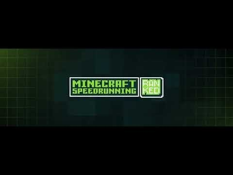

Minecraft PPO Agent
A reinforcement learning agent that teaches itself to build a Nether portal in Minecraft. I used PPO inside a MineDojo environment and shaped the rewards in phases to get past two problems that kept breaking it: the agent learning to do nothing to dodge penalties, and the agent exploiting one easy reward instead of finishing the task. Got it acting deliberately over 250k+ training steps.
Python · PPO · Stable-Baselines3 · MineDojo · voxel observations

Video walkthrough · YouTube